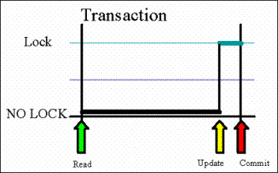

Section Summary: The optimistic locking protocol provides better performance and scalability when having concurrent access to the same data. Optimistic locking offers higher concurrency and better performance than pessimistic locking. It also avoids deadlocks.
Overview
With optimistic locking, you write your business logic allowing multiple users to read the same object at the same time, but allow only one user to update the object successfully. The assumption is that there will be a relatively large number of users trying to read the same object, but a low probability of having a small number of users trying to update the same object at the same time.
In the case of multiple users trying to update the same object at the same time, the one(s) that try to update a non-recent object version fail.
Optimistic locking relies on the idea that data remains unmodified while it is away from the server. As a simple example, consider how you update a customer details object. The customer details are stored within an object, and if a client application needs to update them, it first needs to get the object from the space. The data is not locked, and other client applications can have access to it simultaneously, thus ensuring a scalable system.
The problem is that while the customer details object is away from the space server, it may become stale. For example, a second client application can request the same customer details, update them, and commit them back to the space. The first client, unaware that it is dealing with a stale copy of the data, modifies and commits the data. Obviously, with no version checking mechanism to detect this conflict, the first client's application changes, which commit last, are made permanent, thus overwriting the changes made by the second client application.
For optimistic locking to work effectively, you must be able to detect these update-update conflicts, and to make the client aware of them, so they can be dealt with appropriately.
GigaSpaces optimistic locking protocol:
- Is best suited for environments with many read-only transactions, few read-update transactions, and a relatively low volume of objects that are changed.
- Is more suitable for real-time systems than pessimistic locking, because the space runs best with short term transactions.
- Has a big advantage when you want to read a large number of objects, but update only a few of them - or when it is unlikely that objects you want to work with are updated by other users.
- Ensures that updated objects are the most recent ones, while improving the coherency of system behavior.
Using the Optimistic Locking Protocol
Here are the steps you should execute to update data, using the optimistic locking protocol:
Step 1 – Get a Space Proxy in Versioned Mode
Get a space proxy in versioned mode. This can be done using one of the options listed below. You may get remote or embedded space proxies. Make sure the proxy is in optimistic locking mode using the (versioned) option. This can be done using one of the options listed below:
GigaSpace space = new GigaSpaceConfigurer(new UrlSpaceConfigurer("jini://*/*/space").versioned(true)).gigaSpace();
or
<os-core:space id="space" url="jini://*/*/mySpace" versioned="true" />
Step 2 – Enable the Space Class to Support Optimistic Locking
You should enable the Space class to support the optimistic locking protocol, by including the @SpaceVersion decoration on an int getter field. This field stores the current object version and is maintained by GigaSpaces. See below for an example:
@SpaceClass public class Employee { private int versionID; @SpaceVersion public int getVersionID(){return versionID; } public void setVersionID(int versionID) {this.versionID=versionID;}
Step 3 – Read Objects without using a Transaction
Read objects from the space without using a transaction. You may use the readMultiple method to get several objects in one call. Reading objects without using a transaction, allows multiple users to get the same objects at the same time, and allows them to be updated using the optimistic locking protocol. If objects are read using a transaction, no other user can update the objects until the object is committed or rolled back.
Step 4 – Modify and Update the Objects
Modify the objects you read from the space and call a write space operation to update the object within the space.
Use a transactional with your write operation. You must use a transaction when you update multiple space objects in the same context. When the write operation is called to update the object, the space does the following:
- for each updated object, the Version ID in the updated object is compared with the Version ID of the corresponding object within the space. This is done at the space side.
- if the Version ID of the updated object is the same as the Version ID of the corresponding object within the space, it is incremented by 1, and the object is updated within the space successfully.
- if the Version ID of the updated object is different than the Version ID of the corresponding object within the space, the object is not updated within the space - i.e. the operation fails. In this case, a SpaceOptimisticLockingFailureException is thrown.

It is recommended that you call the update operation just before the commit operation. This minimizes the time the object is locked under a transaction. 
Step 5 – Update Failure
If you use optimistic locking and your update operation fails, an org.openspaces.core.SpaceOptimisticLockingFailureException is thrown. This exception is thrown when you try to write an object whose version ID value does not match the version of the existing object within the space - i.e. you are not using the latest version of the object. You can either roll back or refresh the failed object and try updating it again. This means you should repeat step 4 - refreshing the failed object reads the latest committed object from the space, back to the client side. For a fast refresh, you may read the object using the readByID method. Make sure you also provide the SpaceRouting value.
Step 6 – Commit or Rollback Changes
At any time, you can commit or rollback the transaction. If you are using Spring automatic transaction demarcation, the commit is called implicitly once the method that started the transaction is completed.
By following the above procedure, you get a shorter locking duration, that improves performance and concurrency of access among multiple users to the space object. The object version ID validation that is performed on update, take, and updateMultiple requests, keeps the data within the space consistent.
Examples
We use the following Space Class with our examples:
import com.gigaspaces.annotation.pojo.*; @SpaceClass public class Employee { private Integer employeeID; private String lastName; private String firstName; private int versionID; public Employee(){} public Employee(Integer employeeID){this.employeeID = employeeID;} public Employee(String lastName, Integer employeeID) { this.employeeID = employeeID; setLastName(lastName); } public Employee(String lastName,String firstName ,Integer employeeID) { this.employeeID = employeeID; setFirstName(firstName); setLastName(lastName); } @SpaceId @SpaceRouting public Integer getEmployeeID(){ return employeeID;} public void setEmployeeID(Integer employeeID){ this.employeeID = employeeID;} @SpaceIndex (type=SpaceIndexType.BASIC) private String getFirstName(){return firstName;} public void setFirstName(String firstName) {this.firstName = firstName; } private String getLastName(){return lastName;} public void setLastName(String name){ this.lastName = name;} @SpaceVersion public int getVersionID(){return versionID; } public void setVersionID(int versionID) {this.versionID= versionID;} }
Non-Transactional Update
This example illustrates optimistic locking usage without using a transactional update:
@GigaSpaceContext (name="gigaspace") GigaSpace gigaspace; @Transactional(propagation=Propagation.NEVER) public void simpleOL() throws Exception{ Employee employ= new Employee("Last Name1" , "First name1" , new Integer(1)); gigaspace.write(employ); try { //Read should not use a transaction! Employee v1Employee = gigaspace.readById(Employee.class,new Integer(1),new Integer(1)); Employee v2Employee= gigaspace.readById(Employee.class,new Integer(1),new Integer(1)); System.out.println("About to Write Version:" + v1Employee.getVersionID()); gigaspace .write(v1Employee); System.out.println("Employee ID " + v1Employee.getEmployeeID() + " - Object version in Space:" + v2Employee.getVersionID()); System.out.println("About to Write Version:" + v2Employee.getVersionID()); gigaspace .write(v2Employee); } catch (SpaceOptimisticLockingFailureException solfe) { System.out.println("Got " + solfe); System.out.println("re-read Employee Object again"); Employee v3Employee= gigaspace .readById(Employee.class,new Integer(1),new Integer(1)); System.out.println("Perform update again. Client Object version:" + v3Employee.getVersionID()); LeaseContext<Employee> leaseContext= gigaspace .write(v3Employee); if (leaseContext.getObject()!= null) System.out.println("Update Successful! Object version in Space:" + v3Employee.getVersionID()); } }
Here is the expected output:
About to Write Version:1 Employee ID 1 - Object version in Space:1 About to Write Version:1 Got org.openspaces.core.SpaceOptimisticLockingFailureException: Entry Version ID conflict, Operation rejected. Operation=Update UID=2012775165^17^1^0^0 space entry version=2 client version=1; nested exception is com.j_spaces.core.client.EntryVersionConflictException: Entry Version ID conflict, Operation rejected. Operation=Update UID=2012775165^17^1^0^0 space entry version=2 client version=1 re-read Object again perform Update again.. Client Object version:2 Update Successful! Object version in Space:3
Transactional Update
The read and the transactional update methods:
public class MyApp { @GigaSpaceContext (name="gigaspace") GigaSpace gigaspace; @Transactional(propagation=Propagation.NEVER) public void init() throws Exception{ gigaspace.clear(null); Employee employ= new Employee("Last Name1" , "First name1" , new Integer(1)); gigaspace.write(employ); } @Transactional(propagation=Propagation.NEVER) public Employee readEmployee(Object id , Object routing) { return gigaspace.readById(Employee.class,id ,routing); } @Transactional(propagation=Propagation.REQUIRES_NEW) public LeaseContext<Employee> writeEmployee (Employee employee) { return gigaspace.write(employee); } }
The calling method:
public void myBizzLogic() throws Exception { myapp.init(); Employee v1Employee = myapp.readEmployee(new Integer(1),new Integer(1)); Employee v2Employee = myapp.readEmployee(new Integer(1),new Integer(1)); System.out.println("About to Write Version:" + v1Employee.getVersionID()); myapp.writeEmployee (v1Employee); System.out.println("Write Employee version " + v1Employee.getVersionID()+" OK!"); System.out.println("About to Write Version:" + v2Employee.getVersionID()); try { myapp.writeEmployee (v2Employee ); } catch (SpaceOptimisticLockingFailureException solfe) { System.out.println("Got " + solfe); System.out.println("re-read Employee Object again!"); Employee v3Employee = myapp.readEmployee(new Integer(1),new Integer(1)); System.out.println("Perform update again. Client Object version:" + v3Employee.getVersionID()); LeaseContext<Employee> leaseContext=myapp.writeEmployee(v3Employee); if (leaseContext.getObject()!= null) System.out.println("Update Successful! Object version in Space:" + v3Employee.getVersionID()); } System.out.println("Done!"); }
Here is the expected output:
About to Write Version:1 Employee ID 1 - Object version in Space:1 About to Write Version:1 Got org.openspaces.core.SpaceOptimisticLockingFailureException: Entry Version ID conflict, Operation rejected. Operation=Update UID=2012775165^17^1^0^0 space entry version=2 client version=1; nested exception is com.j_spaces.core.client.EntryVersionConflictException: Entry Version ID conflict, Operation rejected. Operation=Update UID=2012775165^17^1^0^0 space entry version=2 client version=1 re-read Object again perform Update again.. Client Object version:2 Update Successful! Object version in Space:3
Multiple Objects Update
In general, when calling the updateMultiple() you should check every returned object from the returned array.
If one of the returned objects is a SpaceOptimisticLockingFailureException, this indicates that the update failed. In this case you should re-read the relevant object, and call the update operation again.
The read and update methods:
@Transactional(propagation=Propagation.NEVER) public Employee[] readEmployees(Employee template) { return gigaspace.readMultiple(template, Integer.MAX_VALUE); } @Transactional(propagation=Propagation.REQUIRES_NEW) public Object[] writeEmployees (Employee employee[]) { return gigaspace.updateMultiple(employee,new long [employee.length]); }
This method checks if the returned result includes a SpaceOptimisticLockingFailureException:
static boolean checkResult(Object results[]) { for (Object result : results) { if (result instanceof SpaceOptimisticLockingFailureException) { return false; } } return true; }
The application read and update logic:
Employee employees1 [] = app.readEmployees(new Employee()); Employee employees2 [] = app.readEmployees(new Employee()); Object res1[] = app.writeEmployees(employees1); if (!checkResult(res1)) { System.out.println("Error Updating objects"); } while (true) { Object res2[] = app.writeEmployees(employees2); if (!checkResult(res2)) { System.out.println("Error Updating objects"); employees2 = app.readEmployees(new Employee()); } else { break; } }
| When there are more than 2 clients (or 2 threads within the same client) that might update space objects at the same time, before re-reading the space objects, you should have a short sleep with a random duration. This allows one of the threads to complete the update successfully. Without such a sleep, you might have a contention with the update activity. |
Scenario Example
Suppose that you have two applications, Application_1 and Application_2, which are both working with the same Object A. The following sequence of events describes a simple optimistic locking scenario.
| Time | Action | Application_1 | Application_2 |
|---|---|---|---|
| T=1 | Initial conditions: both applications read the object from the space. | Object A VersionID=1 Value1=X Value2=Y |
Object A VersionID=1 Value1=X Value2=Y |
| T=2 | Both modify the same objects. | Object A VersionID=1 value1=X Value2=Y_1 |
Object A VersionID=1 value1=X_2 Value2=Y |
| T=3 | Application_2 updates object A and commits - commit is successful. | Object A VersionID=1 Value1=X Value2=Y_1 |
Object A VersionID=2 Value1=X_2 Value2=Y |
| T=4 | Application_1 tries to update object A, but fails due to invalid Version ID. | Object A VersionID=1 Value1=X Value2=Y_1 |
|
| T=5 | Application_1 refreshes object A (re-reads it). | Object A VersionID=2 Value1=X_2 Value2=Y |
|
| T=6 | Application_1 updates object A again and commits - commit is successful. | Object A VersionID=3 value1=X_2 Value2=Y_1 |